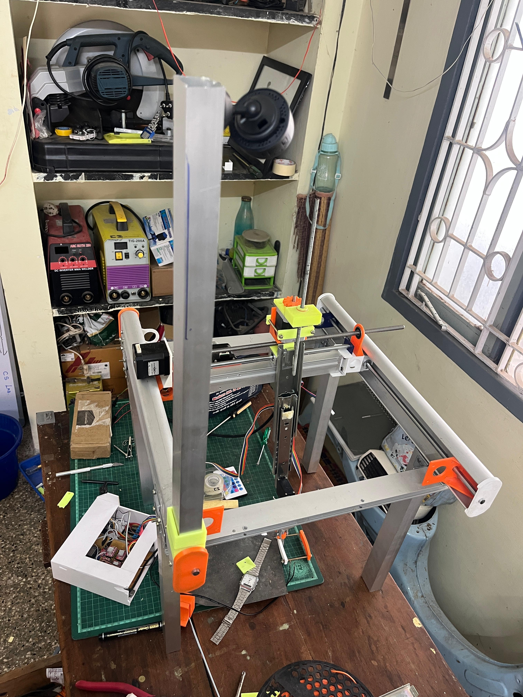
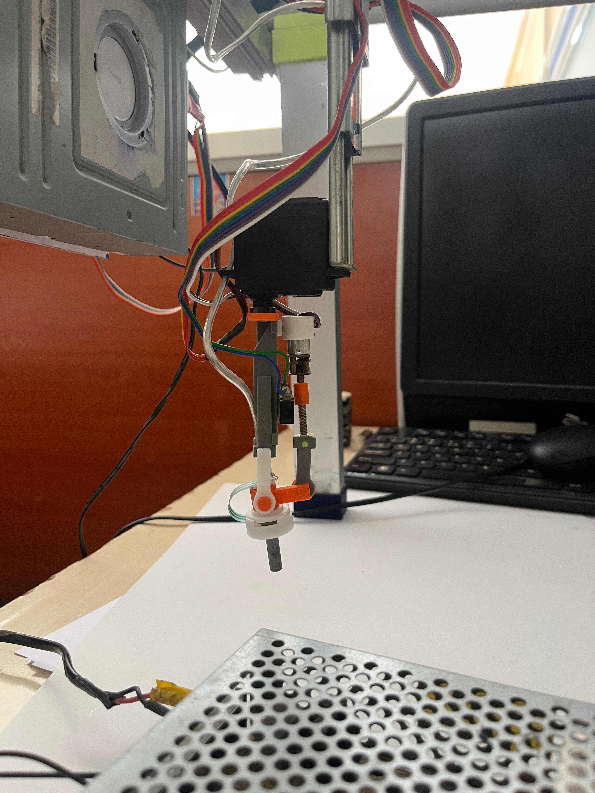
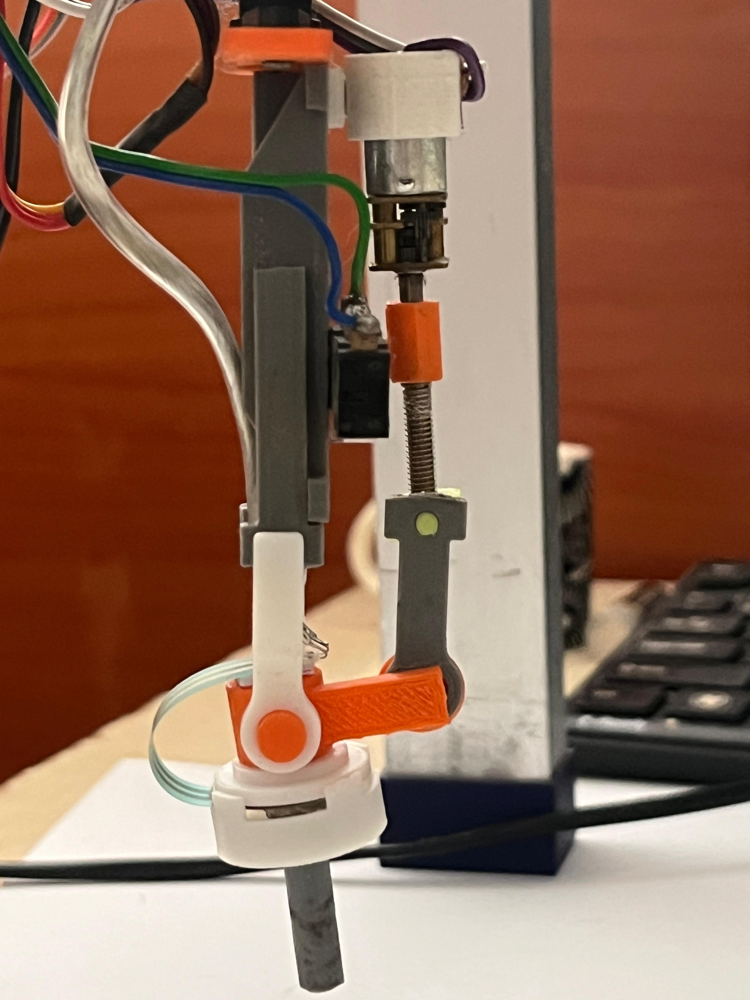
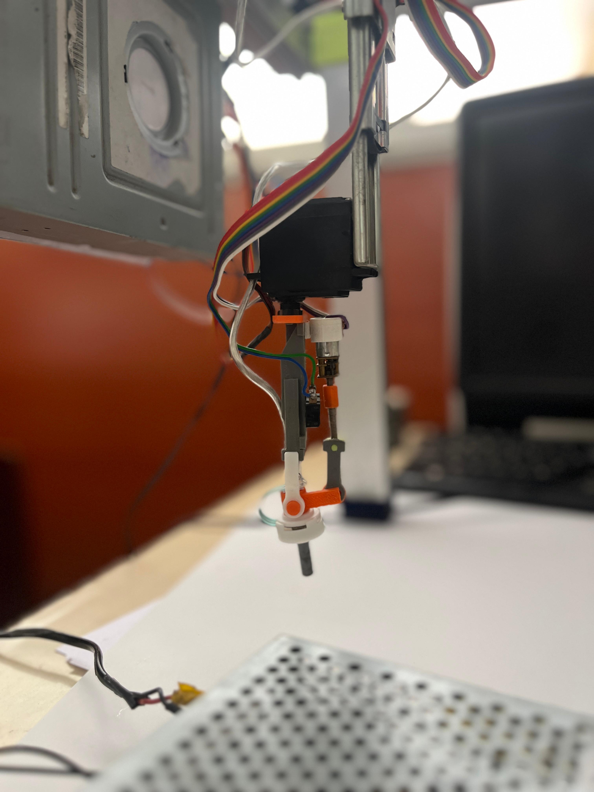

A gantry carries the scanning probe over the patient while the operator controls it remotely. Because the machine does the positioning, no person needs to touch the patient, and one small team can run several stations from a single place.

Scanning normally needs a trained person standing at the patient, holding the probe. This gantry changes that in two ways.
Every gantry is controlled from the same desk. A few people can watch and run a whole row of stations without walking between them.
The gantry moves the probe. The operator works from a distance, so nobody has to reach over or lean against the patient to get the scan.
The patient lies under the gantry. The gantry stays clear until the scan starts.
Choose the station on the control screen or the handheld controller, then start from wherever you are sitting.
Follow progress for that station, or look across all of them and step in only when one needs you.



Run the gantry from a desk, away from the patient.
See and control every station from one screen.
A small team covers more stations.
The machine positions the probe, not a person.
Save a scan path and run it the same way every time.
Watch each scan as it happens.
A simple knob and display for hands-on control when wanted.
Staff stay away from the scan area during the scan.
Bring another gantry under the same desk.